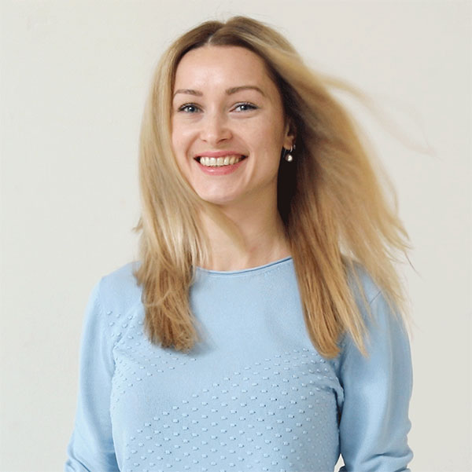
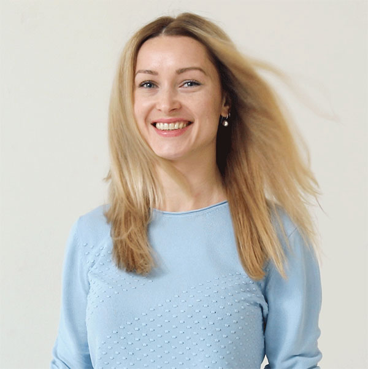
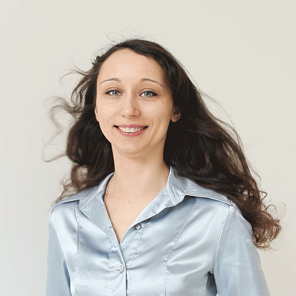
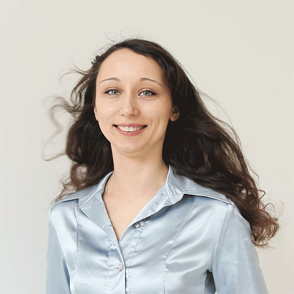

Керівник та ідейний натхненник студії Tutoria. Викладач української мови та літератури
Освіта: Волинський національний університет ім. Лесі Українки
Викладач української мови та літератури
Освіта: Національний педагогічний університет ім. М.П. Драгоманова
Переможець Всеукраїнського конкурсу-захисту науково-дослідницьких робіт учнів-членів Малої академії наук України (секція “Фольклористика”)
Освіта: Київський національний університет ім. Тараса Шевченка, Кандидат філологічних наук.
Переможець Всеукраїнських учнівських і студентських олімпіад з української мови та літератури (2006, 2007, 2012).
Бал ЗНО з української мови та літератури: 195.5
Викладач історії України
Освіта: Національний університет «Києво-могилянська Академія»
Кандидат історичних наук
Викладач хімії
Аспірантура інституту загальної та неорганічної хімії НАН України
Ми в постійному пошуку талановитих викладачів. Надсилай своє резюме, якщо хочеш стати частиною Тutoria
Освіта: Київський національний університет ім. Тараса Шевченка
Переможець Всеукраїнських учнівських і студентських олімпіад з української мови та літератури (2006, 2007, 2012)
Мене надихають: подорожі, сон, музика
У моєму житті на вагу золота: цікаві люди й цікаві книжки
Остерігаюся: Недоброзичливих людей, невихованих собак, окремих котів
Стежу за: розвитком української художньої гімнастики
Мої досягнення: збірка оповідань «Сіра веселка», блог про сучасний український літературний процес «Читацький процес»
Іноді не можу заснути: від радості, що на світі є цікаві книжки
Правило життя: людині насправді належить те, що вона віддає іншим

 
 
